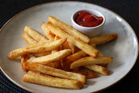

<!DOCTYPE html>
<html lang="EN">
    <head>
        <meta charset="UTF-8">
        <title>"French Fries"</title>
    </head>
</html>
<body><h1>French Fries Recipe</h1>
      <h3>Chef John's French Fries</h3>
      <div>
        
      </div>

      <h4><em>*Learn how to make French fries that are super crispy with this twice-fried method. I don't think most people realize that any decent French fry needs to be fried twice. The first frying is done at a lower temperature, which softens the potato and prepares the starchy surface for the second frying's crispification.</em></h4>

        <h3>"Time to cook"</h3>
                           
        <h4>Prep: <em>10 mins</em> | Cook: <em>10 mins</em> | Total: <em>50 mins </em> | Servings: <em>2</em></h4>

        <div>
            <h3>"Ingredients"</h3>
            <ul>
                <li><h4>1 large russet potato, cut into evenly sized strips</h4></li>
                <li><h4>2 cups vegetable oil for frying, or as needed</h4></li>
                <li><h4>salt to taste</h4></li>
            </ul>
            <h3>"Directions"</h3>
            <ol>
                <li><h4>Soak potato strips in a large bowl of water for about 30 minutes. Pat with paper towels until thoroughly dry. </h4></li>
                <li><h4>Heat oil in a deep-fryer or large saucepan to 275 degrees F (135 degrees C). Gently add potatoes to the hot oil and fry for about 5 minutes, stirring and flipping the potatoes occasionally. Use a slotted spoon to transfer potatoes to a paper towel-lined plate. Let cool completely. </h4></li>
                <li><h4>Heat oil again, but this time to 350 degrees F (175 degrees C). Add potatoes and fry a second time until golden brown, 5 to 6 minutes.</h4></li>
                <li><h4>Remove from the deep-fryer and blot with a paper towel. Sprinkle with salt to serve.</h4></li>                
            </ol>


</body>
</html>